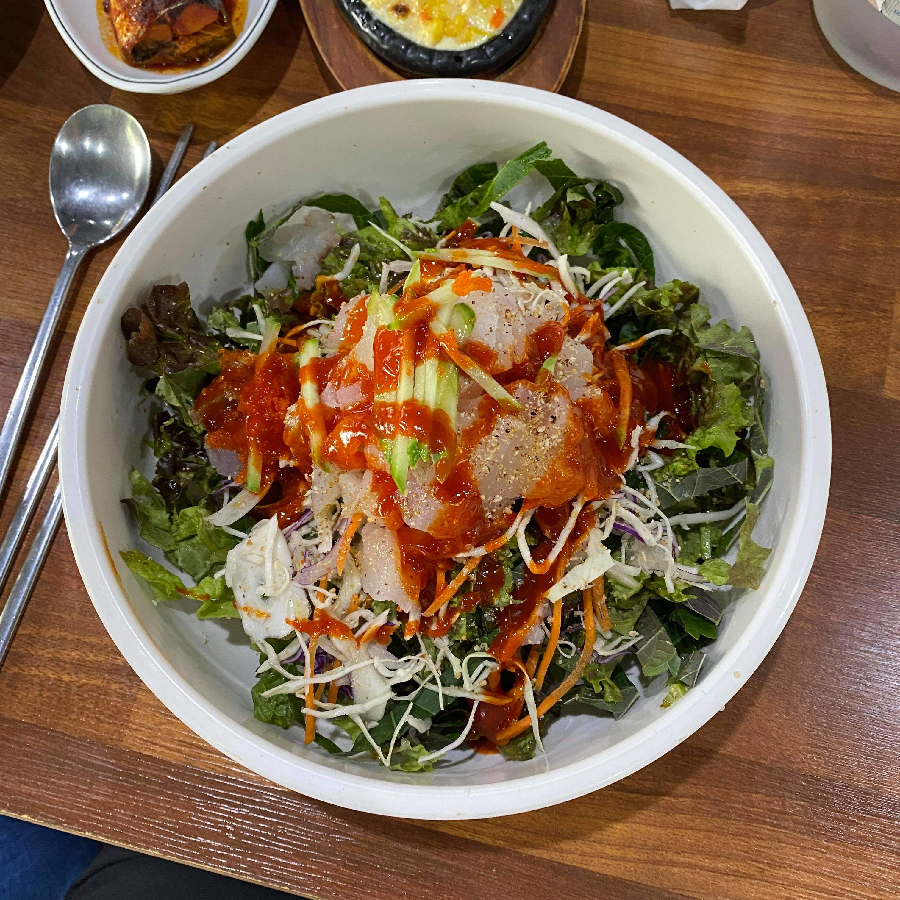
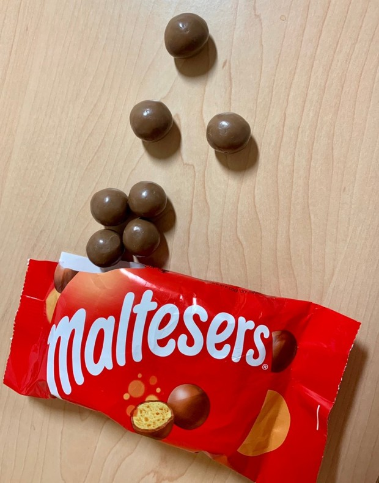
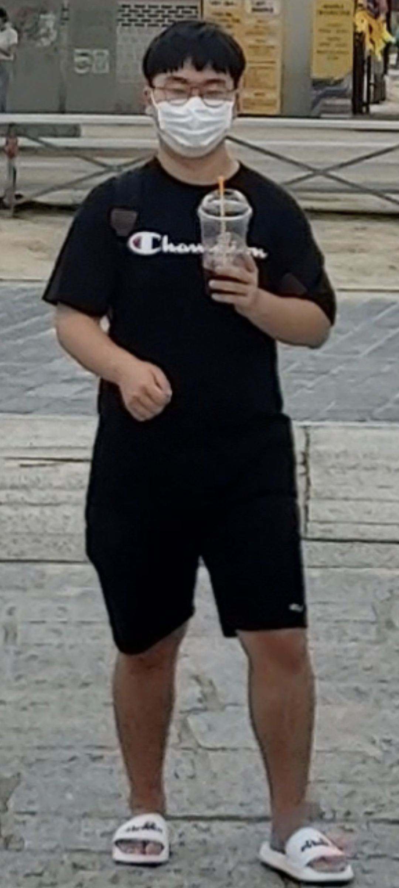
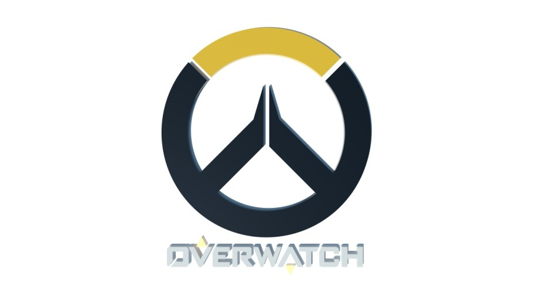

김태은에 대해서 알아보자. 김태은은 일단 2003년 02월 26일 출생이다. 그는 생일에 대한 자부심이 나름 있는편이다. 어떤것에 대한 자부심일까 라고 생각이 들겠지만 별거 없다. 그냥 일찍 태어난 것이다. 그는 자기보다 늦게 태어난 친구들에게 형이라고 부르라고 시키며 종종 자기가 불리한 일이나 대화 도중에 생일을 들먹이며 "나 2월 26일생이야 내가 너보다 형인데 이러면 안되지" 라는 투로 말한다.
 김태은이 좋아하는 음식은 일단 회덮밥을 좋아한다. 그리고 초콜릿도 좋아하며 초콜릿과 함께 커피를 자주 마시는 편이다.(아메리카노) 김태은이 딱히 안먹는 음식은 없는거 같고(다 먹는듯) 최근에 학교에서 기른 상추를 매우 맛있다고 하며 좋아한다. 특이사항은 학교 급식에서 샐러드가 있으면 밥 대신 샐러드를 먹는 편이다.(다이어트)
김태은의 키는 현재 체육관 측정기계 오피셜로는 175.7cm 이지만, 당시 까치발을 조금 들었다고 한다. 몸무게는 2020년 12월부터 다이어트를 시작해서 현재 71.2kg이 나가고 있다. 그의 다이어트 일대기는 다른 목차에서 자세히 다룰 예정이다.
김태은이 즐겨하는 게임은 오버워치를 주로 했었으며 요새는 잘 안하는 걸로 알고 있다. 근래에는 피파를 위주로 하며 가끔 선수 강화로 도박하다가 실패하면 그만둔다고 얘기하면서 막상 실패하면 잠시 안하다가 좀 지나면 다시 시작하는 모습을 볼 수 있다. (냄비근성이라고 볼 수도 있는거 같다.)